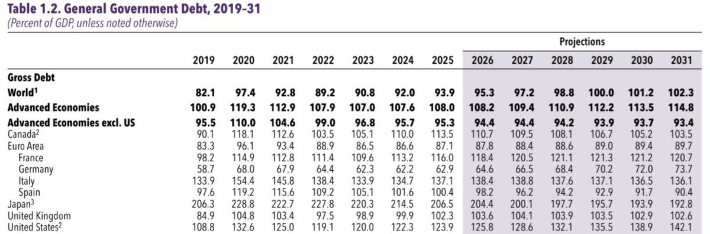
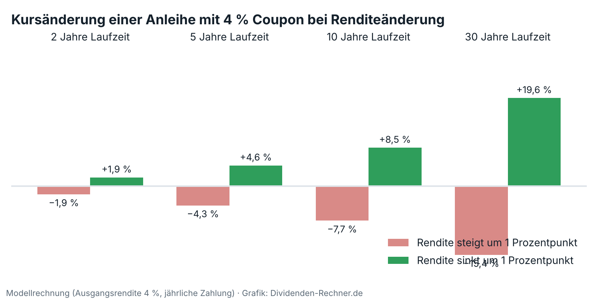
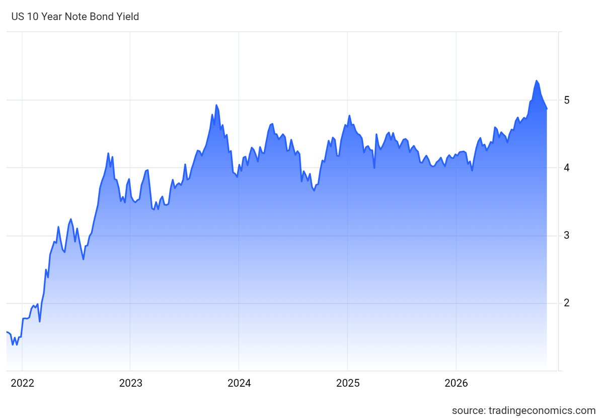
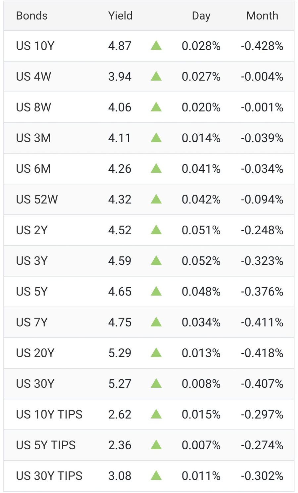

Analyse
Anleihen 2026: Warum die UBS Qualitätsanleihen trotz Zinsschwankungen für attraktiv hält
Wie Anleihen funktionieren, was Kurse und Renditen bewegt und wo die UBS derzeit Chancen sieht. Mit einer Modellrechnung zur Laufzeit und einer Einordnung für Dividendenanleger.
Kurz gesagt
UBS-Einstufung Fixed Income: „Attraktiv“ Rendite 10-jährige US-Staatsanleihen: 4,87 % (7.11.2026)
Die UBS rät Anlegern, nicht auf ruhigere Zeiten zu warten: Höhere Anfangsrenditen bringen laufende Erträge und ein Polster gegen weiter steigende Zinsen. Für Dividendenanleger sind Anleihen eine Alternative mit festem Ertrag, aber ohne Wachstum.
Zehnjährige US-Staatsanleihen werfen 4,87 % ab, mehr als die meisten Dividendenaktien. Das verändert den Maßstab für jeden, der auf Ausschüttungen setzt. Das Chief Investment Office der UBS hat dazu am 29. Oktober eine Studie vorgelegt, die bewusst unbequem ist: Wer wartet, bis sich die Lage beruhigt hat, macht nach Ansicht der Bank einen Fehler. Dazu gehört der Hinweis, dass hier eine Bank mit Anlageprodukten spricht. Die Studie ist eine allgemeine Information und keine persönliche Empfehlung.
Warum die Renditen gestiegen sind
Anleger verlangen mehr Rendite als Ausgleich für Risiken: Sorgen über Staatsschulden, mit Fokus auf Frankreich, geopolitische Spannungen und Engpässe bei der Energieversorgung infolge des Nahostkonflikts. Das macht Anleihen attraktiver und die Kurse schwankungsanfälliger. Die UBS stuft Fixed Income insgesamt als „Attraktiv“ ein. Steigen die Renditen weiter, hilft ein höherer Coupon als Polster, fallen sie, weil Inflation und Wachstum nachlassen, steigen die Kurse.
Die Sorge um die Staatsschulden hat eine Grundlage. Der Internationale Währungsfonds rechnet in seinem Fiscal Monitor vom April 2026 damit, dass die weltweite Staatsverschuldung von 93,9 % der Wirtschaftsleistung im Jahr 2025 auf 102,3 % im Jahr 2031 steigt. In den USA wächst sie von 123,9 auf 142,1 %, in Deutschland von 62,9 auf 73,7 %. Frankreich liegt mit 116,0 % schon hoch und steigt bis 2029 auf 121,3 %, bevor die Prognose einen leichten Rückgang zeigt. Japan bleibt trotz sinkender Quote mit 192,8 % das am höchsten verschuldete große Land, Spanien und Italien sinken dagegen leicht. Je mehr Anleihen die Staaten ausgeben müssen, desto mehr Rendite verlangen Anleger für zusätzliches Angebot, das ist der Kern der Warnung vor den langen Laufzeiten.

Quelle: Internationaler Währungsfonds, Fiscal Monitor April 2026, Tabelle 1.2 (ab 2026 Prognose)Der Zusammenhang ist einfach: Eine Anleihe ist ein Darlehen mit festen Zinsen, und ihr Kurs bewegt sich gegenläufig zur Rendite. Wie stark, bestimmt die Laufzeit.

Die Grafik ist eine eigene Modellrechnung. Eine Anleihe mit 4 % Coupon verliert bei einem Renditeanstieg um einen Prozentpunkt bei 2 Jahren Laufzeit knapp 2 %, bei 10 Jahren etwa 7,7 % und bei 30 Jahren gut 15 %. Fällt die Rendite um einen Punkt, gewinnt sie bei 10 Jahren gut 8 % und bei 30 Jahren knapp 20 %. Deshalb unterscheidet die UBS so genau zwischen den Laufzeiten.
Wie der Markt heute aussieht
Zehnjährige US-Staatsanleihen rentieren aktuell mit 4,87 %. Das ist deutlich mehr als vor vier Jahren, als die Rendite bei gut 1,5 % lag, und knapp unter dem Hoch von gut 5 % aus diesem Herbst. Im vergangenen Monat ist sie um 0,43 Prozentpunkte gefallen, auf Jahressicht aber um 0,76 Punkte gestiegen.

Quelle: Trading Economics, Stand 7. November 2026Die Zinskurve zeigt, wo der Markt Risiko bezahlt. Kurzläufer rentieren zwischen 3,9 und 4,3 %, zweijährige Papiere mit 4,52 %, fünfjährige mit 4,65 %. Am langen Ende liegen die Renditen bei 5,29 % (20 Jahre) und 5,27 % (30 Jahre). Wer lange bindet, bekommt also etwa 0,4 Prozentpunkte mehr als bei zehn Jahren, trägt dafür aber das größere Kursrisiko aus der Modellrechnung oben. Genau davor warnt die UBS bei den längsten Laufzeiten. Inflationsgeschützte Anleihen (TIPS) bringen zehnjährig 2,62 % über der Inflation.

Quelle: Trading Economics, Stand 7. November 2026Wo die UBS Chancen sieht
Favorisiert sind hochwertige Anleihen mit mittlerer bis langer Laufzeit. Sie bieten Potenzial für Kursgewinne und wirken im Depot als Gegengewicht zu Aktien. Bei den längsten Laufzeiten mahnt die UBS zur Vorsicht, aus drei Gründen: Zweifel an den Staatsfinanzen, die wachsenden Anleiheemissionen rund um künstliche Intelligenz und die Möglichkeit, dass die Laufzeitprämie hoch bleibt, also der Aufschlag für das Zinsrisiko langer Papiere. Wie groß der Einfluss der KI-Konzerne ist, zeigt eine Auswertung von PIMCO: Die großen Cloud-Anbieter stellten bis Ende Mai mehr als 30 % der neu ausgegebenen 30-jährigen US-Unternehmensanleihen. Den Anstieg der Zehnjahresrendite erklärt PIMCO allerdings nur zu etwa einem Viertel mit der Laufzeitprämie, den Rest mit veränderten Erwartungen an die US-Notenbank.
Daneben nennt die UBS Unternehmensanleihen guter Bonität mit mittlerer Laufzeit für Anleger mit Ertragsfokus und Schwellenländeranleihen mit kurzer Laufzeit, die gute Renditen bei solider Verfassung der Emittenten bieten, aber mehr Kredit- und Marktrisiko tragen. Komplexe, an Zinsen gekoppelte Ertragsprodukte sieht sie nur als Ergänzung, nicht als Ersatz für Kernbestände.
Die Streuwirkung von Qualitätsanleihen ist nicht garantiert. Analysen von US-Daten über ein Jahrhundert zeigen, dass sie in Phasen niedriger Inflation am besten funktioniert und bei hoher Inflation nachlässt.
Was das für Dividendenanleger heißt
Die Rendite zehnjähriger US-Staatsanleihen liegt bei 4,87 %. Unilever kommt bei der Dividende auf gut 3 %, CVS Health auf 3,3 %. Der Unterschied liegt in der Verlässlichkeit. Der Coupon ist vertraglich zugesagt, die Dividende ist freiwillig und kann gekürzt werden, sie kann aber auch wachsen. CVS hat seine seit Januar 2024 nicht mehr erhöht, andere Firmen heben jedes Jahr an.
Drei Fragen helfen bei der Entscheidung. Welche Aufgabe soll die Anleihe übernehmen: Kapitalerhalt und Streuung sprechen für hochwertige Papiere, wer Ertrag sucht, nimmt mehr Risiko in Kauf. Wie lange halte ich Kursschwankungen aus: Wer bis zur Fälligkeit hält, erhält den Nennwert zurück, sofern der Schuldner zahlt. Und in welcher Währung rechne ich: Die 4,87 % gelten für US-Dollar, wer in Euro denkt, trägt ein Währungsrisiko.
Risiken
Steigen die Zinsen weiter, sitzt ein Käufer vorübergehend auf Verlusten, vor allem bei langen Laufzeiten. Der Markt sieht die Wahrscheinlichkeit einer Zinserhöhung am 9. Dezember bei rund 76 %, wie in unserer Wochenbilanz beschrieben. Hohe Inflation schwächt den Vorteil von Anleihen, und die wachsende Staatsverschuldung kann die Laufzeitprämie oben halten. Dazu kommt, dass die Studie von einer Bank stammt, die Anlageprodukte verkauft.
Wichtig sind in den kommenden Wochen die US-Inflationszahlen am 10. November, die Zinsentscheidung am 9. Dezember und die Frage, ob die Renditen langer Laufzeiten weiter steigen.
Das ist eine Einordnung und keine Anlageberatung.
Quellen
- UBS Chief Investment Office GWM, „Wie können Anleger von Anleihen profitieren – und wo ergeben sich Chancen?“, Investment strategy insights, 29.10.2026 (PDF, Autoren: Matthew Carter, Frederick Mellors, Achim Peijan, Daisy Tseng)
- PIMCO: AI financing needs do not override cyclical drivers of yield, Credit Market Lens, 1.6.2026
- CNBC über StockTitan, Börsenbericht vom 6.11.2026 (Zinserwartung der Fed)
- Internationaler Währungsfonds, Fiscal Monitor „Fiscal Policy under Pressure: High Debt, Rising Risks“, April 2026, Tabelle 1.2
- Trading Economics, Renditen und Verlauf US-Staatsanleihen, Stand 7.11.2026
- Eigene Berechnung: Modellrechnung zur Kursänderung (Anleihe mit 4 % Coupon, jährliche Zahlung)
Dieser Beitrag fasst die genannten Quellen in eigenen Worten zusammen. Die Kursgrafik ist eine eigene Modellrechnung, Verlauf und Tabelle der Renditen stammen von Trading Economics. Alle Angaben ohne Gewähr.
Hinweis: Dieser Text dient der allgemeinen Information und ist weder Anlage-, Steuer- noch Rechtsberatung. Kapitalanlagen sind mit Risiken verbunden, bis hin zum Totalverlust.